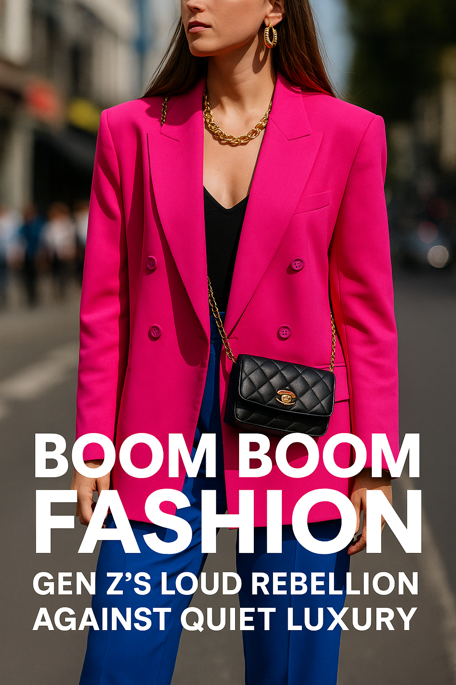

Boom Boom Fashion: Gen Z’s Loud Rebellion Against Quiet Luxury
A bold new wave is crashing through fashion — Gen Z is bringing back maximalism, power dressing, and unapologetic style. Dubbed “Boom Boom Fashion,” this movement reclaims the opulence of the 80s with new energy.
If 2023 and 2024 were dominated by the hushed tones of quiet luxury — think minimalist blazers, muted palettes, and stealth wealth aesthetics — 2025 is screaming something very different. Literally.
What Is Boom Boom Fashion?
The term comes from a desire to embrace noise, volume, and exaggerated expression. We’re talking neon power suits, fake furs, massive earrings, and unapologetically bold heels. It's a movement rooted in nostalgia but driven by defiance. If quiet luxury whispers, Boom Boom fashion blasts a speaker through the wall.
“This is not a trend — it’s a declaration: Look at me. Hear me. Remember me.”
On TikTok, the hashtag #BoomBoomFashion has already racked up millions of views as creators swap out clean girl looks for metallics, sequins, and anything that says “I paid attention in history class and still chose chaos.”
Why Gen Z Is Turning Up the Volume
This generation grew up in a whirlwind of global crises, social change, and aesthetic overload. After years of being told to “calm down” — emotionally and visually — they’re reclaiming the right to be extra. The style says: I survived, so now I shine.
It’s also a direct rebellion against the class-coded elitism of quiet luxury, which often valorizes restraint as sophistication. Boom Boom Fashion laughs at that restraint. It sparkles instead.
Look 1: The Bold Blazer Is Back
The oversized, structured, shoulder-padded blazer is now everywhere — but not in gray. Think electric pink, cobalt blue, neon green. Worn as a dress or with slouchy pants, it’s a throwback to the 80s boardroom queen, now ruling social media.
Look 2: Earrings You Can Hear
Forget minimalist studs. We’re seeing hoops the size of espresso saucers, chandelier drops, and architectural designs that don’t whisper — they announce. And they’re gold. Always gold.
Look 3: The Boot That Stomps
Nothing says 80s meets chaos like a giant pair of platform boots. Patent, holographic, pearly white — whatever catches light and stomps with pride. Gen Z isn't trying to walk quietly. They’re here to leave marks.
Final Thoughts: This Is Gen Z’s Moment
Boom Boom Fashion is more than a revival — it’s a refusal. A refusal to shrink, to disappear, or to play small. This style is loud on purpose. It’s armor disguised as aesthetic. It’s freedom dressed as fun.
“In a world trying to mute you, dressing loud is an act of power.”
So yes — the Boom Boom is back. And Gen Z is dancing to its beat in full color.
Published: 2025-05-17